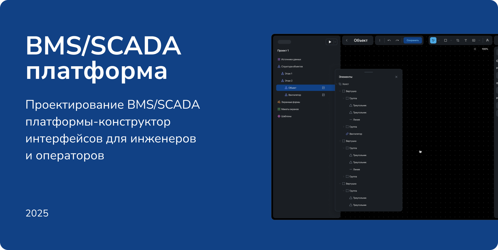
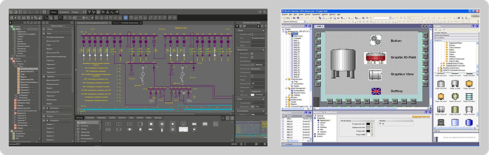
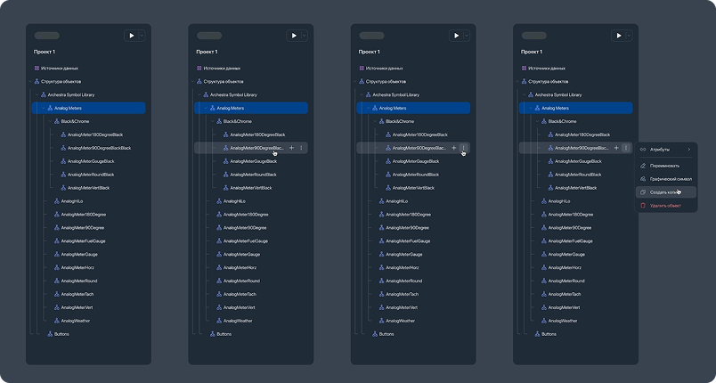
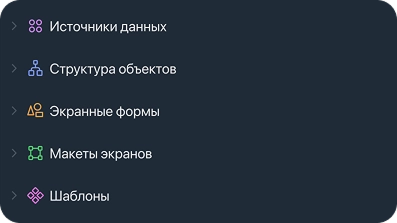
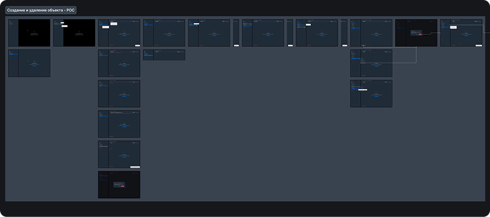
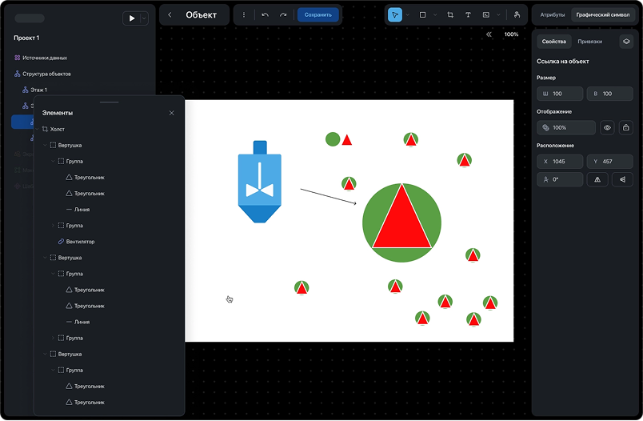

BMS/SCADA платформа — конструктор интерфейсов
Проектирование BMS/SCADA платформы-конструктор интерфейсов для инженеров и операторов
Контекст
После ухода зарубежных SCADA-платформ с рынка появилась потребность в современном инструменте для управления промышленными системами.
Мы работали над универсальной BMS/SCADA платформой, которая должна была:
- масштабироваться под крупные проекты;
- быть удобной для инженеров при настройке систем;
- оставаться простой в ежедневной работе операторов.
К моменту моего подключения уже были:
- сформированный роадмап;
- определён MVP;
- результаты первых пользовательских исследований;
- выделены ресурсы разработки.

Как я выстроила процесс, ускоривший разработку
Исходная ситуация
После подключения к проекту фронтенд уже был готов начинать работу, но полноценного интерфейса ещё не существовало — были только отдельные вайрфреймы.
С учётом сжатых сроков до MVP и сложности системы это означало риск простоя разработки, если бы дизайн шёл строго последовательно.
Поэтому я сфокусировалась на том, чтобы выстроить процесс параллельной работы дизайна и фронтенда.
Быстрый старт разработки через базовые экраны
Чтобы дать разработке возможность стартовать, я определила набор базовых элементов системы:
- древовидная навигация;
- структура рабочих областей;
- графический редактор;
- базовые компоненты дизайн-системы.
Эти элементы были выделены так как они отражали повторяющиеся модули, найденные в ходе анализа SCADA-систем и интервью с инженерами.
Быстрая проверка с пользователями
Параллельно с этим мы уже проводили активные интервью с инженерами.
В течение примерно недели я вынесла первые концепты на проверку, чтобы понять:
- насколько понятна иерархия объектов;
- насколько ожидаема структура рабочих областей;
- насколько логично выглядит графический редактор в базовом сценарии.
Это позволило быстро убедиться, что выбранные элементы соответствуют реальным ментальным моделям пользователей.
Далее я подготовила концепты этих экранов и интерфейсных паттернов, чтобы зафиксировать визуальное направление продукта и утвердить его с PM и CEO.

Запуск параллельной работы
После согласования концепции я приступила к проработке минимальной дизайн-системы и детализации ключевых элементов интерфейса.
Параллельно второй дизайнер продолжал развитие пользовательских сценариев и проведение интервью, а фронтенд уже начал реализацию базовых модулей.
Результат для процесса
Такой подход позволил:
- запустить разработку до завершения полного дизайна;
- избежать простоя фронтенд-команды;
- выстроить параллельный процесс дизайна и разработки;
- ускорить старт MVP на несколько недель.
Как развивалось проектирование продукта
После запуска разработки я переключилась на полноценное проектирование платформы.
Развитие интерфейса и редактора
Дальше проектирование постепенно расширялось:
- была сформирована единая структура приложения с сайдбар-навигацией;
- уточнялись сценарии работы с объектами и рабочими областями;
- развивалась логика взаимодействия между объектами, тегами и визуализацией.
Графический редактор был спроектирован по принципам современных design tools, так как в интервью инженеры регулярно отмечали, что используют Figma для создания схем из-за неудобства встроенных SCADA-редакторов..
В редактор были заложены:
- бесконечный холст;
- drag-and-drop взаимодействия;
- контекстные панели;
- привычные паттерны редактирования.
В качестве основы использовалась библиотека tldraw.

Проверка решений
Все ключевые решения продолжали проверяться с пользователями:
- коридорные тесты с инженерами;
- обсуждения в рабочих чатах;
- интерактивные прототипы.
Мы проверяли:
- навигацию;
- структуру модулей;
- сценарии работы с объектами и тегами;
- поведение графического редактора.
Корректировки вносились до передачи решений в разработку.

Результаты
Проект находится на стадии разработки
На этапе проектирования удалось:
- сформировать UX-основу платформы;
- спроектировать ключевые модули системы;
- создать масштабируемую структуру интерфейса;
- подготовить интерфейсы для нескольких этапов релизов;
- выстроить параллельную работу дизайна и разработки;
- избежать простоя разработки;
- ускорить старт MVP на несколько недель;
- заложить основу дизайн-системы для дальнейшего развития продукта.

Что я вынесла из проекта
Этот проект стал опытом работы над сложной enterprise-системой в условиях высокой неопределённости.
Я убедилась, что в таких продуктах важно:
- быстро выделять фундаментальные элементы системы;
- запускать разработку через минимально достаточные интерфейсы;
- параллелить дизайн и разработку без потери качества;
- опираться на реальные пользовательские сценарии;
- развивать архитектуру продукта постепенно, а не “сразу целиком”.